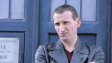

| HOME | Episódios | Galeria de Fotos | Downloads | Jogo | Personagens | Entrevista |
Entrevistas |
||
Christopher Eccleston |
 | Christopher EcclestonO Doutor |
|
Assim como o Doutor tem feito através dos anos, Christopher Eccleston embarcou em uma jornada pelo desconhecido quando soube que uma nova temporada de Doctor Who estava em planejamento. Primeiro, ele mandou um e-mail para o coprodutor executivo e roteirista Russel T. Davies para informá-lo de que ele tinha interesse em interpretar a nona encarnação do Lorde do Tempo. Um dos mais aclamados atores de sua geração, Christopher admite que dizer “sim” à proposta de reviver o Doutor foi um ato de coragem. "Para ser bem sincero, muitos dos papéis que fiz foram coisas básicas", ele conta sorrindo, ao se referir a séries como Our Friends in the North e Hillsborough. “O que eu percebi sobre Doctor Who é que estou entretendo um público diferente. É divertido, engraçado, assustador e feito para famílias, então estou meio que atuando para crianças, e me sinto muito sortudo de poder fazer isso. Em todos os perigos que o Doutor encontra, a mensagem do programa é aproveitar a vida, ser otimista e ver o lado positivo das coisas. O programa foi escrito com paixão e humor, e há uma inocência nele. Um tipo de celebração à vida em todas suas formas. Tudo o que o Doutor faz é um brado de ‘é ótimo estar vivo’. Dá pra ver pessoas fazendo cara feia para isso, mas é nisso em que ele acredita e é uma boa mensagem para passar às crianças.” Apropriadamente para um programa clássico sendo reinventado para o século XXI, Christopher não tinha nenhum pré-concepção sobre Doctor Who, já que quase nunca havia assistido a série quando era criança. “Tenho algumas lembranças do programa, mas eu sempre estava brincando na rua”, ele conta. “Então não precisei ficar pensando sobre o que tinha acontecido antes da minha chegada. Sempre tento fazer o melhor programa de TV que eu posso, e eu sabia que, tendo trabalhado com Russel antes, esse programa tinha grandes chances de ser um dos melhores.” Quando Cristopher assinou o contrato para fazer o papel do Doutor, Russel já havia escrito os dois primeiros scripts, dando ao ator uma amostra do personagem que esperava. “Ele é o Doutor de Russel, e eu criei o personagem com base no que ele escreveu”, diz Christopher. “Mas eu acho que, no decorrer dos episódios, Russel começou a ver o que eu estava fazendo e passou a escrever para mim. Creio que eu fiz algumas coisas que ele gostou com o personagem, e ele usou isso”. Assim, o papel mais excêntrico e teatral dos Doutores anteriores se foi, dando lugar a um aventureiro mais alienígena, com um sotaque do norte britânico. “O sotaque é muito interessante”, conta Christopher, nascido em Manchester, que já fez filmes como Shallow Grave, Elizabeth e 28 Days Later. “O Doutor é um cientista e um intelectual, e muita gente pensa que você só pode ser essas coisas se falar de forma rebuscada, e isso é uma grande bobagem. Sobre as roupas que ele usa (muito preto, com camisetas de cores diferentes), eu não quis que fossem uma parte grande do personagem. Quis que toda a extravagância e cores exageradas saíssem. Acho que já é uma performance grande o bastante, então se eu estivesse usando roupas como essas, só faltaria uma tenda de circo! Também tem o desafio de dar um elemento cômico ao personagem. Eu nunca havia feito muita comédia e quis tentar um pouco.” Mas, para Christopher, a definição do Doutor é de uma pessoa que vive o aqui e agora. “Ele não gosta de pensar em seu passado – existe dor lá – e sua única preocupação com o futuro é se assegurar que haja um. Ele meio que come a vida. Ele não tem uma missão, não tem interesses pessoais, ele simplesmente está lá. As coisas acontecem, ele responde a elas e faz o que acha que é o certo.” Ao se juntar a Rose, o Doutor fica em contato com a família dela, trazendo à tona outro elemento de sua personalidade. “Ele não faz o tipo ‘doméstico’”, sorry Christopher. “Tem até uma passagem sobre isso em um dos episódios. Ele não gosta de ambientes domésticos ou de ter que responder a outras pessoas. O nono Doutor tem um problema com compromissos!” Mas, mesmo com tanta visão da personalidade do novo Doutor, o ator que o interpreta admite que ainda há muito o que descobrir sobre ele. “Acho difícil falar sobre o programa porque é um projeto muito grande, e estamos tendo tanto trabalho com ele que ainda não tive tempo de formar uma opinião definitiva”, conta Christopher. ‘Para ser sincero, já me peguei me comportando como o Doutor – eu entro em cena, a cena acontece, eu reajo a ela, eles gravam e é isso. Não estou falando de “imersão”, ou qualquer outro método – é um programa com a produção tão acelerada que você simplesmente tem que se virar! Tudo o que você precisa saber sobre Doctor Who está na tela. Mais do que qualquer outro programa em que já trabalhei, esse entrega exatamente o que anuncia'. Christopher completa: “Quando aceitei o papel de Doutor, estava reagindo de coração ao que sempre achei que Russel quis fazer: televisão que seja divertida e tenha substância. Se tivermos acertado, acho que Doctor Who será exatamente assim.” |
||